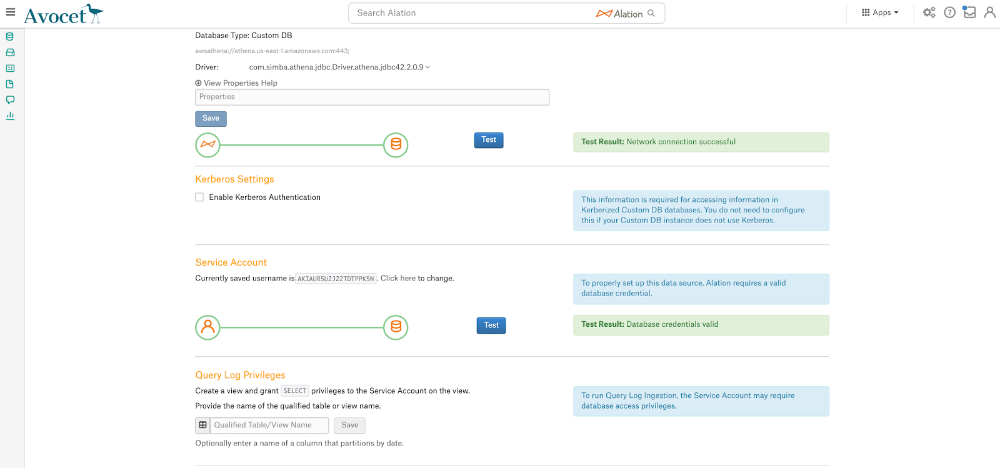
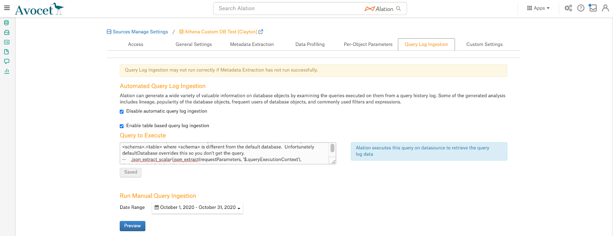

Amazon Athena¶
Supported as Custom DB from version 2020.3
Amazon Athena is supported with the Custom DB functionality and Simba Athena JDBC driver version 2.0.9.
Important
It is strongly recommended to enable the Presto grammar parser instead of the default general SQL parser for Amazon Athena data sources. The use of the Presto grammar parser guarantees better results for Athena QLI. Please create a ticket for the Alation Support to have the Presto parser enabled for your Athena data source.
Scope of Support¶
Authentication with the Access Key and Secret Key
Full and selective Metadata Extraction (MDE), for tables and views.
Automatic MDE
From version 2021.3 Alation supports authentication with AWS IAM for MDE and QLI
Table and Column Profiling
Automatic Profiling
Query-based Profiling
Compose
From version 2021.1, Alation supports SSO connection to Athena for end-users: Compose SSO for Amazon Data Sources
Note
Compose SSO authentication does not apply to the service account used for MDE, automatic profiling, and QLI.
From version 2020.4, Alation supports QLI from Amazon Athena using AWS CloudTrail events.
Limitations¶
Support has not been certified for:
Custom query-based MDE
Federated queries in Compose
Concurrent queries in Compose
AWS Billing¶
Billable by Amazon on your AWS account:
The queries Alation runs on the connected Amazon Athena database instance during MDE and profiling
The queries users run in Alation Compose
Prerequisites¶
You have the required driver for Amazon Athena
You have SSH access to the Alation instance or access via a terminal (for example, Putty or iTerm2)
You will need to add the driver Alation and then fix it with the Driver Fixer tool
Ports¶
Port 443 must be open and port 444 may need to be open too (see MDE Works but Profiling and Compose Time Out below).
Any load balancers/proxy servers must be configured to forward traffic over these ports to the Alation instance.
Required Information¶
Your AWS region
The output path of the Amazon S3 location where Amazon Athena stores query results
A service account for Alation:
Access key
Secret key
The appropriate managed policies must be granted to the Alation service account to run MDE and profiling on databases in Athena
QLI uses AWS CloudTrail and requires additional configuration.
Service Account¶
Use the information in this section if you choose to authenticate to Amazon Athena using a service account.
Note
From version 2021.3, you can authenticate with AWS IAM without using a service account. For details, see Configure Extraction with AWS IAM Authentication.
Use an Existing IAM User Account¶
You can use an existing Amazon Athena account as the Service Account for Alation:
Note that the billing for queries run by Alation during MDE and profiling and the billing for queries run by this account in Athena and in Compose will be combined;
The existing account must be assigned the managed policies recommended by Alation (AmazonAthenaFullAccess, access to the default S3 results bucket, access to the S3 buckets in AWS Glue).
Create New IAM User Account¶
Create a new IAM user account for Alation
Important
Be sure to save the access and secret keys. If you lose the secret key you will have to create another account.
If permitted, attach the following AWS managed policy:
AmazonAthenaFullAccess
This policy:
Creates a default
athena-examplesbucketGrants the user access to:
All Athena actions
Most AWS Glue actions (such as CREATE DATABASE)
Access to the default S3 results bucket (for query results)
"arn:aws:s3:::aws-athena-query-results-*"
You may need to edit the inline policies as prescribed by your company’s access rules.
For additional information on setting up an IAM account for Amazon Athena, refer to Amazon Athena documentation.
QLI Setup¶
Alation QLI uses AWS CloudTrail events and requires the AWS CloudTrail to be enabled on the AWS account.
Verify that the CloudTrail Trail for your AWS account logs Amazon Athena queries. The event type StartQueryExecution should be logged.
In Athena, create an external table using the SQL template below. The external table can be created in any available database, including the Default database. When using the template below, make sure to specify the correct values instead of the placeholder values (such as the table name and the CloudTrail S3 bucket name):
CREATE EXTERNAL TABLE default.athena_qli ( eventversion STRING, userIdentity STRUCT< type:STRING, principalid:STRING, arn:STRING, accountid:STRING, invokedby:STRING, accesskeyid:STRING, userName:STRING, sessioncontext:STRUCT< attributes:STRUCT< mfaauthenticated:STRING, creationdate:STRING>, sessionIssuer:STRUCT< type:STRING, principalId:STRING, arn:STRING, accountId:STRING, userName:STRING>>>, eventTime STRING, eventSource STRING, eventName STRING, awsRegion STRING, sourceIpAddress STRING, userAgent STRING, errorCode STRING, errorMessage STRING, requestParameters STRING, responseElements STRING, additionalEventData STRING, requestId STRING, eventId STRING, resources ARRAY<STRUCT< ARN:STRING, accountId: STRING, type:STRING>>, eventType STRING, apiVersion STRING, readOnly STRING, recipientAccountId STRING, serviceEventDetails STRING, sharedEventID STRING, vpcEndpointId STRING ) PARTITIONED BY( region string, year string, month string, day string ) ROW FORMAT SERDE 'com.amazon.emr.hive.serde.CloudTrailSerde' STORED AS INPUTFORMAT 'com.amazon.emr.cloudtrail.CloudTrailInputFormat' OUTPUTFORMAT 'org.apache.hadoop.hive.ql.io.HiveIgnoreKeyTextOutputFormat' LOCATION 's3://bucket/AWSLogs/';
Alation recommends to partition the external table. You can create empty partitions for the future that span a desired logging period. Be careful not to overrun any quotas on the DDL statements on concurrent query limits. Note that there are tools that can help avoid issuing too many queries at a time, such as athena-cli. When using the template below, make sure to specify the correct values instead of the example values.
-- add the partitions -- be careful not to run too fast so that you don't overrun any quotas or limits on the DDL statements on concurrent query limits ALTER TABLE default.athena_qli ADD PARTITION (region='us-east-1', year='2020',month='06',day='15') LOCATION 's3://bucket/AWSLogs/313374953141/CloudTrail/us-east-1/2020/06/15/'; ALTER TABLE default.athena_qli ADD PARTITION (region='us-east-1', year='2020',month='06',day='16') LOCATION 's3://bucket/AWSLogs/313374953141/CloudTrail/us-east-1/2020/06/16/'; -- Add more partitions as necessary
Alation recommends creating a QLI View for the external table and then use the View-based QLI configuration on the Alation side. Alternatively, you can use custom query-based QLI configuration, which does not require this view. If you intend to use query-based QLI, still note down the query template in the example below. The query template given below includes comments on choices you can make when writing the SQL for your Athena data source. Make sure to substitute placeholder values with real values.
Important
If you are using the OEM Athena Simba driver, schemas are cataloged as
AWSDataCatalog.<schema_name>. If a query has only two parts, for exampleSELECT * from schema.tableit will not be parsed in Alation even if you pass indefaultdatabases = awsdatacatalog. To fix this, include the following Replace script to replace every schema name in the query SQL with the two-part identifier. Example:REPLACE (REPLACE (REPLACE (REPLACE (json_extract_scalar (requestParameters, '$.queryString'), 'schema1','awsdatacatalog.schema1'), 'schema2','awsdatacatalog.schema2'), 'schema3','awsdatacatalog.schema3'), 'schema4', 'awsdatacatalog.schema4') AS queryString
QLI View SQL template
CREATE OR REPLACE VIEW awsdatacatalog.default.athena_qli_view AS SELECT (CASE CAST(useridentity.type AS VARCHAR) WHEN 'AssumedRole' THEN SUBSTR(useridentity.principalid, position(':' IN useridentity.principalid)+1) WHEN 'IAMUser' THEN useridentity.username ELSE useridentity.username END) AS userName ,'' AS defaultDatabases -- database is not dependable. User may pick a default database but write the query <schema>.<table> where <schema> is different from the default database. Unfortunately defaultDatabase overrides this so you don't get the query. ,json_extract_scalar(responseElements, '$.queryExecutionId') AS sessionId ,eventtime AS sessionStartTime ,eventtime AS startTime -- if using SIMBA driver you will need to append the catalog name (usually awsdatacatalog) to each schema name. Example: -- REPLACE(REPLACE(REPLACE(REPLACE(json_extract_scalar(requestParameters, '$.queryString'),'schema1','awsdatacatalog.schema1'), 'schema2','awsdatacatalog.schema2'), 'schema3', 'awsdatacatalog.schema3'), 'schema4', 'awsdatacatalog.schema4') AS queryString ,json_extract_scalar(requestParameters, '$.queryString') AS queryString ,NULL AS milliseconds FROM awsdatacatalog.default.athena_qli WHERE 1=1 -- set for the appropriate region AND region = 'us-east-1' -- use next three lines for testing using a single partition; otherwise comment out -- AND year = '2020' -- AND month = '07' -- AND day = '01' -- next three lines will always pull queries from the previous partition (previous 24 hours) -- use for automated qli -- AND year = date_format(date_add('day',-1,current_date),'%Y') -- AND month = date_format(date_add('day',-1,current_date),'%m') -- AND day = date_format(date_add('day',-1,current_date),'%d') -- various filters to keep "junk" queries out of Alation, feel free to add/delete as needed AND json_extract_scalar(requestParameters, '$.queryString') <> 'SHOW SCHEMAS' AND json_extract_scalar(requestParameters, '$.queryString') NOT LIKE 'SHOW TABLES IN%' AND json_extract_scalar(requestParameters, '$.queryString') <> 'SELECT 1' -- next line pulls only queries without an error code (i.e. completed queries) AND CAST(ErrorCode AS VARCHAR) IS NULL -- pulls only the Athena query events; do not comment out AND eventname = 'StartQueryExecution'
A finished query example
CREATE OR REPLACE VIEW awsdatacatalog.default.test_QLI_view AS SELECT CASE CAST(useridentity.type AS VARCHAR) WHEN 'AssumedRole' THEN SUBSTR(useridentity.principalid, position(':' IN useridentity.principalid)+1) WHEN 'IAMUser' THEN useridentity.username ELSE useridentity.username END AS userName ,'' AS defaultDatabases ,json_extract_scalar(responseElements, '$.queryExecutionId') AS sessionId ,eventtime AS sessionStartTime ,eventtime AS startTime ,json_extract_scalar(requestParameters, '$.queryString') AS queryString ,'null' AS milliseconds FROM awsdatacatalog.default.athena_qli_test WHERE 1=1 AND region = 'us-east-1' AND json_extract_scalar(requestParameters, '$.queryString') <> 'SHOW SCHEMAS' AND json_extract_scalar(requestParameters, '$.queryString') NOT LIKE 'SHOW TABLES IN%' AND json_extract_scalar(requestParameters, '$.queryString') <> 'SELECT 1' AND CAST(ErrorCode AS VARCHAR) IS NULL AND eventname = 'StartQueryExecution'
Note down the fully qualified name of the QLI View. You will need to specify it in Alation when configuring QLI.
Step 1: Add the Amazon Athena Simba Driver to Alation¶
Important
The use of the Simba JDBC driver for Amazon Athena follows 2 scenarios:
If you are going to configure SSO through an IdP for your Athena data source or MDE with authentication through AWS IAM, you will need to modify the Simba JDBC driver by adding the CustomSessionCredentialsProvider java class. See Update the Simba JDBC Driver for Amazon Athena to Support SSO.
If you are not planning on using SSO for your Athena data source or MDE with authentication through AWS IAM, you do not need to repackage the driver before using it in Alation. Follow instructions in Add Custom Drivers to add the driver to Alation and use the Driver Fixer tool to fix the driver.
Step 2: Add Data Source¶
After you have collected the required information and moved the custom driver to the Alation server, you can add your Amazon Athena data source to the catalog:
Sign into Alation and create a new data source. Select Custom DB as Database Type.
Construct the JDBC URI. At the beginning of the URI, do not type the
JDBCprefix.Format:
awsathena://<your_AWS_URL>:443;S3OutputLocation=s3://<your S3 location>Examples:
awsathena://athena.us-west-1.amazonaws.com:443;S3OutputLocation=s3://aws-athena-query-results-313374953141-us-east-1If the S3 output location is defined in the default workgroup:
awsathena://<your_AWS_URL>:443If the S3 output location is defined in a workgroup other than default:
awsathena://<your_AWS_URL>:443;workgroup=<your workgroup>
From the Select Driver dropdown list, select the Amazon Athena Simba driver you have added to the Alation server:
Click Save and Continue. The next wizard screen - Set Up a Service Account - will open.
Select Yes and enter:
Click Save and Continue. The next wizard screen, Configure Your Data Source, will open. Click Skip This Step.
{kind=link}
You will be navigated to the Access tab of the data source Settings page.
Step 3: Configure Settings¶
Complete the configuration of the data source on each tab of the Settings:
Access: verify the Privacy settings
General Settings: verify connectivity and other settings that apply
Custom Settings: set Catalog Object Definition and/or Limit Query Template.
Set Catalog Object Definition to be Catalog.Schema.Table
As Limit Query Template, use
SELECT COLUMNS FROM TABLE_NAME FILTER_CLAUSES LIMIT ROW_SIZE.Metadata Extraction: set up and run metadata extraction
Per-Object Parameters: object visibility, object settings for Profiling, and custom queries for Profiling
Data Profiling: run Profiling
Metadata Extraction¶
Configure and perform metadata extraction and verify the results:
Automatic full and selective MDE is supported.
In Settings > Custom Settings, check that you have set Catalog Object Definition to Catalog.Schema.Table to remove any driver-imposed prefixes from the metadata object names.
Sampling and Profiling¶
Configure and perform Sampling and Profiling:
Users can run a sample for an individual table on the Samples tab of the Table Catalog page or profile an individual column on the Overview tab of the Column page.
Automatic full and selective Profiling is supported.
Use the Per-Object Parameters in Settings tab to specify which objects to profile.
Custom query-based Sampling is supported. Custom Query-Based Sampling allows you to provide a custom query for profiling each specific table.
Deep Column Profiling (Profiling V2 ) is supported.
Query Log Ingestion¶
You can configure query log ingestion (QLI) using a view or using a custom query.
Important
QLI requires pre-configuration on in AWS. See QLI Setup.
View-Based QLI¶
You will need the fully qualified name of the QLI view that you have created in Amazon Athena.
On the General Settings tab of the Settings page, locate the section Query Log Privileges:
Specify the fully qualified name of the QLI view you created for Alation.
Click Save.
Go to the Query Log Ingestion tab.
Select a date range and click Preview to validate that queries are fetched.
Note
When selecting the date range, make sure it is aligned with the partitions used in the QLI view. Alation will only return queries from the days included into the partitions. If the selected date range does not match the partitions of the QLI view, no queries will be returned. You can use Compose to change the SQL of the QLI view directly from Alation and test QLI.
Perform QLI.
Query-Based QLI¶
You will need the SQL statement for the custom query for QLI.
On the Query Log Ingestion tab, select the checkbox Enable table based query log ingestion.
In the custom query field that appears, paste the QLI query.
Click Save to save the query:
Select a date range and click Preview to validate that the queries are fetched.
Note
When selecting the date range, make sure it is aligned with the partitions used in the QLI query. Alation will only return queries from the days included into the partitions. If the selected date range does not match the partitions of the QLI query, no queries will be returned. You can use Compose to change the SQL of the QLI query directly from Alation and test the QLI.
Perform QLI.
Compose¶
Log into Compose:
If SSO for Compose users has been configured, users will authenticate with their IdP credentials.
Note
It is not recommended to schedule queries and use Excel Live Reports with the connection established using SSO authentication as these features require user credentials to be valid at the time the data is refreshed. AWS STS API does not currently offer the capability to automatically renew temporary credentials. Users can still schedule queries or use Excel Live reports over connections that use an AWS IAM key ID and Secret if they are available to users establishing the connection.
If basic authentication is used, Compose users will use the access and secret keys to authenticate and query Amazon Athena.
Use the Catalog.Schema.Table format for writing queries.
Troubleshooting Amazon Athena Setup¶
If you get errors during MDE or profiling, check the taskserver.log log file for detailed information.
S3 Output Bucket Read/Write Errors¶
If you see the following errors in taskserver.log:
Caused by: com.simba.athena.support.exceptions.GeneralException: [Simba][AthenaJDBC](100071) An error has been thrown from the AWS Athena client. Unable to verify/create output bucket sample-bucket [Execution ID not available]
Caused by: com.simba.athena.amazonaws.services.athena.model.InvalidRequestException: Unable to verify/create output bucket sample-bucket (Service: AmazonAthena; Status Code: 400; Error Code: InvalidRequestException; Request ID: b2e40c48-acbe-4a5c-b888-2c08c6b5e995)
Or:
2020-04-08 17:06:27,280 INFO qtp1097324923-15 alation.base.connection.GenericDbConnectionImpl - Connection failed!
java.sql.SQLException: [Simba][AthenaJDBC](100071) An error has been thrown from the Amazon Athena client. You do not seem to have access to the Amazon S3 location of your query results. Please confirm your account has access to the S3 location where your query results are saved and try again. If you are using KMS to encrypt query results, please ensure you have permission to access your KMS key. If you continue to see this issue, please contact customer support. [Execution ID: 5c93e8f5-d2bf-42a2-874b-e3ad6dcbd0e9]
Verify that the Alation service account has READ/WRITE access to the S3 output bucket. Also verify that the account has read access to S3 buckets in AWS Glue.
Certification Errors¶
You may get the following error in taskserver.log:
2018-12-20 15:53:16,763 INFO qtp324169305-53 alation.api.taskserver.Task - verifyDbAccount API Result: {"error":"unable to find valid certification path to requested target"}
This error is caused by the Alation instance not being whitelisted at the company’s firewall. In some environments it is not enough to open port 443. The instance has to be whitelisted. This error may also be misleading because the connectivity test will pass, but the user interface will state a username/password failure when the username/password are correct.
MDE Works but Profiling and Compose Time Out¶
Generally you will not see any errors in the taskserver.log; however you may get the following:
[Simba][AthenaJDBC](100123) An error has occurred. Exception during column initialization.
You may also get “timeout” errors.
The issue is that the Simba driver uses port 444 to stream results back to the client. MDE works because the driver methods are utilized, whereas profiling and Compose require the results to be streamed back. Unblock port 444. Refer to AWS documentation for more details.